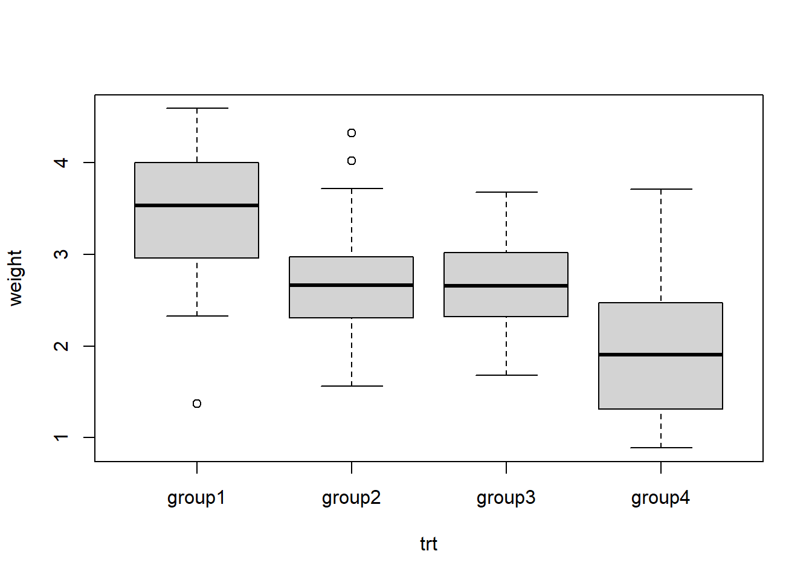
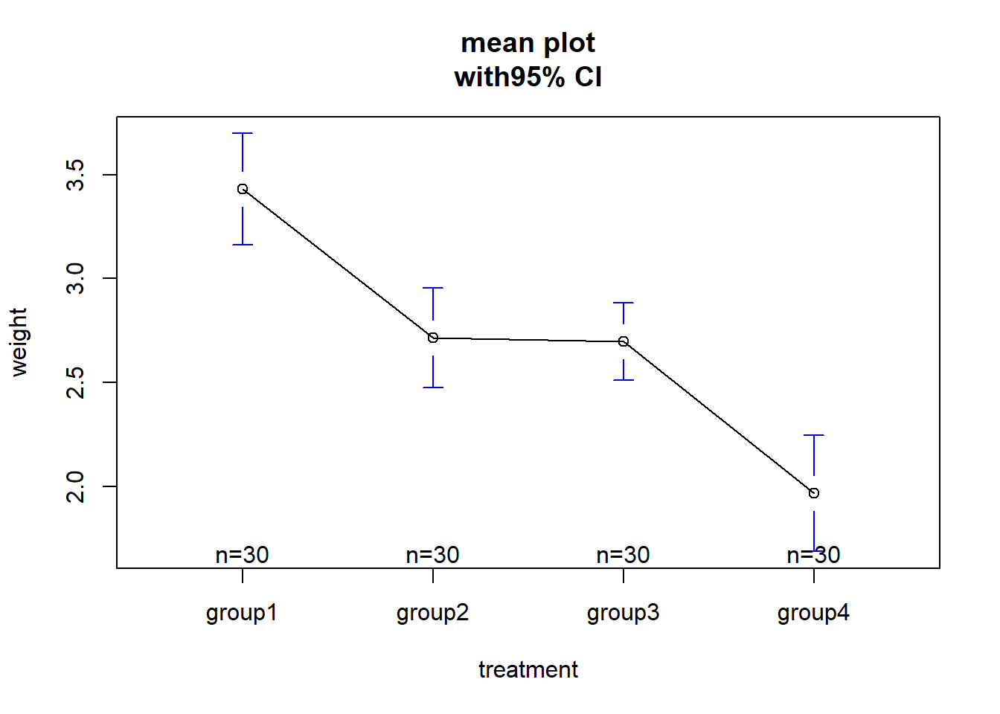
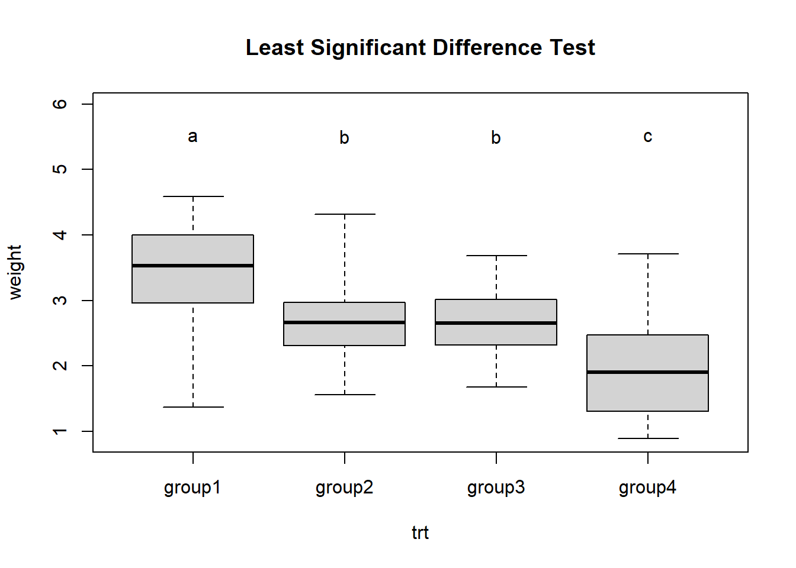
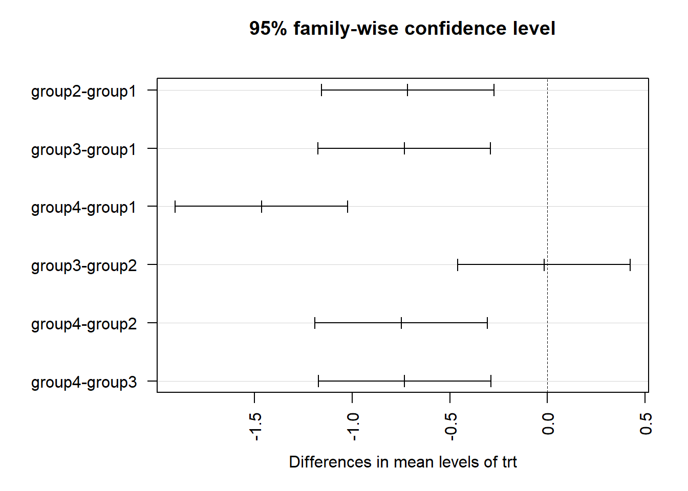
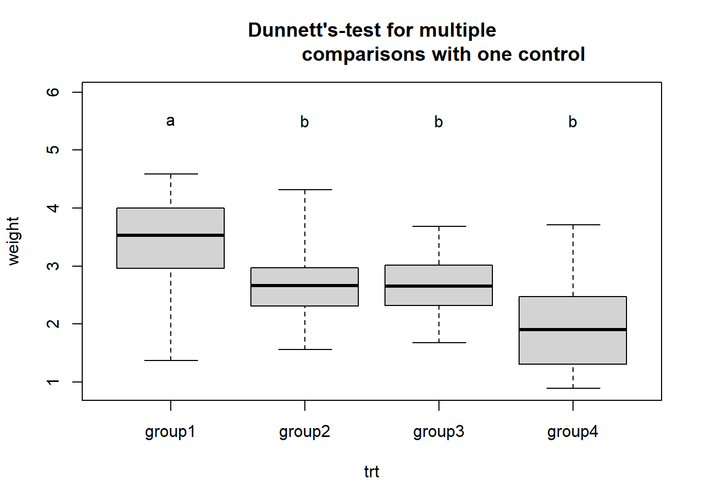
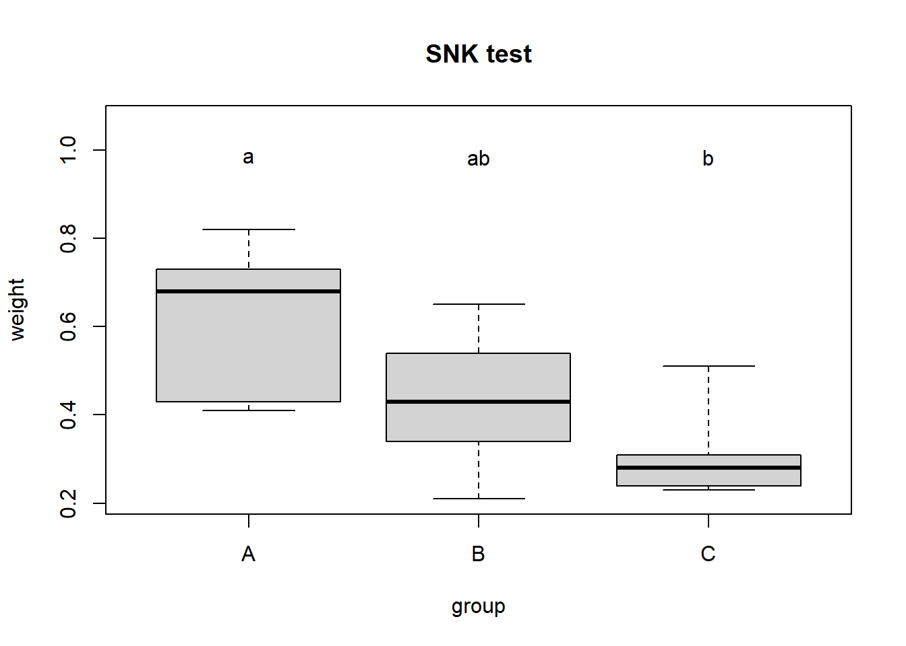

trt<-c(rep("group1",30),rep("group2",30),rep("group3",30),rep("group4",30))
weight<-c(3.53,4.59,4.34,2.66,3.59,3.13,3.30,4.04,3.53,3.56,3.85,4.07,1.37,
3.93,2.33,2.98,4.00,3.55,2.64,2.56,3.50,3.25,2.96,4.30,3.52,3.93,
4.19,2.96,4.16,2.59,2.42,3.36,4.32,2.34,2.68,2.95,2.36,2.56,2.52,
2.27,2.98,3.72,2.65,2.22,2.90,1.98,2.63,2.86,2.93,2.17,2.72,1.56,
3.11,1.81,1.77,2.80,3.57,2.97,4.02,2.31,2.86,2.28,2.39,2.28,2.48,
2.28,3.48,2.42,2.41,2.66,3.29,2.70,2.66,3.68,2.65,2.66,2.32,2.61,
3.64,2.58,3.65,3.21,2.23,2.32,2.68,3.04,2.81,3.02,1.97,1.68,0.89,
1.06,1.08,1.27,1.63,1.89,1.31,2.51,1.88,1.41,3.19,1.92,0.94,2.11,
2.81,1.98,1.74,2.16,3.37,2.97,1.69,1.19,2.17,2.28,1.72,2.47,1.02,
2.52,2.10,3.71)
data1<-data.frame(trt,weight)
head(data1)
## trt weight
## 1 group1 3.53
## 2 group1 4.59
## 3 group1 4.34
## 4 group1 2.66
## 5 group1 3.59
## 6 group1 3.132 多样本均数比较的方差分析
2.1 完全随机设计资料的方差分析
使用课本例4-2的数据。
首先是构造数据，本次数据自己从书上摘录。
数据一共两列，第一列是分组（一共四组），第二列是低密度脂蛋白测量值。
先简单看下数据分布：
boxplot(weight ~ trt, data = data1)
进行完全随机设计资料的方差分析，或者叫单因素方差分析（one-factor ANOVA）：
fit <- aov(weight ~ trt, data = data1)
summary(fit)
## Df Sum Sq Mean Sq F value Pr(>F)
## trt 3 32.16 10.719 24.88 1.67e-12 ***
## Residuals 116 49.97 0.431
## ---
## Signif. codes: 0 '***' 0.001 '**' 0.01 '*' 0.05 '.' 0.1 ' ' 1结果显示组间自由度为3，组内自由度为116，组间离均差平方和为32.16，组内离均差平方和为49.97，组间均方为10.719，组内均方为0.431，F值=24.88，p=1.67e-12，和课本一致。
再简单介绍一下可视化的平均数和可信区间的方法：
library(gplots)
plotmeans(weight~trt,xlab = "treatment",ylab = "weight",
main="mean plot\nwith95% CI")
2.2 随机区组设计资料的方差分析
使用例4-4的数据。
首先是构造数据，本次数据自己从书上摘录。。
weight <- c(0.82,0.65,0.51,0.73,0.54,0.23,0.43,0.34,0.28,0.41,0.21,
0.31,0.68,0.43,0.24)
block <- c(rep(c("1","2","3","4","5"),each=3))
group <- c(rep(c("A","B","C"),5))
data4_4 <- data.frame(weight,block,group)
head(data4_4)
## weight block group
## 1 0.82 1 A
## 2 0.65 1 B
## 3 0.51 1 C
## 4 0.73 2 A
## 5 0.54 2 B
## 6 0.23 2 C数据一共3列，第一列是小白鼠肉瘤重量，第二列是区组因素（5个区组），第三列是分组（一共3组）
进行随机区组设计资料的方差分析：
fit <- aov(weight ~ block + group,data = data4_4)#随机区组设计方差分析，注意顺序
summary(fit)
## Df Sum Sq Mean Sq F value Pr(>F)
## block 4 0.2284 0.05709 5.978 0.01579 *
## group 2 0.2280 0.11400 11.937 0.00397 **
## Residuals 8 0.0764 0.00955
## ---
## Signif. codes: 0 '***' 0.001 '**' 0.01 '*' 0.05 '.' 0.1 ' ' 1结果显示区组间自由度为4，分组间自由度为2，组内自由度为8，区组间离均差平方和为0.2284，分组间离均差平方和为0.2280，组内离均差平方和为0.0764，区组间均方为0.05709，分组间均方为0.1140，组内均方为0.00955，区组间F值=5.798，p=0.01579，分组间F值=11.937，p=0.00397，和课本一致。
2.3 拉丁方设计方差分析
使用课本例4-5的数据。
首先是构造数据，本次数据自己从书上摘录。
psize <- c(87,75,81,75,84,66,73,81,87,85,64,79,73,73,74,78,73,77,77,68,69,74,76,73,
64,64,72,76,70,81,75,77,82,61,82,61)
drug <- c("C","B","E","D","A","F","B","A","D","C","F","E","F","E","B","A","D","C",
"A","F","C","B","E","D","D","C","F","E","B","A","E","D","A","F","C","B")
col_block <- c(rep(1:6,6))
row_block <- c(rep(1:6,each=6))
mydata <- data.frame(psize,drug,col_block,row_block)
mydata$col_block <- factor(mydata$col_block)
mydata$row_block <- factor(mydata$row_block)
str(mydata)
## 'data.frame': 36 obs. of 4 variables:
## $ psize : num 87 75 81 75 84 66 73 81 87 85 ...
## $ drug : chr "C" "B" "E" "D" ...
## $ col_block: Factor w/ 6 levels "1","2","3","4",..: 1 2 3 4 5 6 1 2 3 4 ...
## $ row_block: Factor w/ 6 levels "1","2","3","4",..: 1 1 1 1 1 1 2 2 2 2 ...数据一共4列，第一列是皮肤疱疹大小，第二列是不同药物（处理因素，共6种），第三列是列区组因素，第四列是行区组因素。
进行拉丁方设计的方差分析：
fit <- aov(psize ~ drug + row_block + col_block, data = mydata)
summary(fit)
## Df Sum Sq Mean Sq F value Pr(>F)
## drug 5 667.1 133.43 3.906 0.0124 *
## row_block 5 250.5 50.09 1.466 0.2447
## col_block 5 85.5 17.09 0.500 0.7723
## Residuals 20 683.2 34.16
## ---
## Signif. codes: 0 '***' 0.001 '**' 0.01 '*' 0.05 '.' 0.1 ' ' 1结果显示行区组间自由度为5，列区组间自由度为5，分组（处理因素）间自由度为5，组内自由度为20； 行区组间离均差平方和为250.5，列区组间离均差平方和为85.5，分组间离均差平方和为667.1，组内离均差平方和为0.0683.2； 行区组间均方为50.09，列区组间均方为17.09，分组间均方为133.43，组内均方为34.16， 行区组间F值=1.466，p=0.2447，列区组间F值=0.5，p=0.7723，分组间F值=3.906，p=0.0124，和课本一致。
2.4 两阶段交叉设计资料方差分析
使用课本例4-6的数据。
首先是构造数据，本次数据自己从书上摘录。
contain <- c(760,770,860,855,568,602,780,800,960,958,940,952,635,650,440,450,
528,530,800,803)
phase <- rep(c("phase_1","phase_2"),10)
type <- c("A","B","B","A","A","B","A","B","B","A","B","A","A","B","B","A",
"A","B","B","A")
testid <- rep(1:10,each=2)
mydata <- data.frame(testid,phase,type,contain)
str(mydata)
## 'data.frame': 20 obs. of 4 variables:
## $ testid : int 1 1 2 2 3 3 4 4 5 5 ...
## $ phase : chr "phase_1" "phase_2" "phase_1" "phase_2" ...
## $ type : chr "A" "B" "B" "A" ...
## $ contain: num 760 770 860 855 568 602 780 800 960 958 ...
mydata$testid <- factor(mydata$testid)数据一共4列，第一列是受试者id，第二列是不同阶段，第三列是测定方法，第四列是测量值。
简单看下2个阶段情况：
table(mydata$phase,mydata$type)
##
## A B
## phase_1 5 5
## phase_2 5 5进行两阶段交叉设计资料方差分析：
fit <- aov(contain~phase+type+testid,mydata)
summary(fit)
## Df Sum Sq Mean Sq F value Pr(>F)
## phase 1 490 490 9.925 0.0136 *
## type 1 198 198 4.019 0.0799 .
## testid 9 551111 61235 1240.195 1.32e-11 ***
## Residuals 8 395 49
## ---
## Signif. codes: 0 '***' 0.001 '**' 0.01 '*' 0.05 '.' 0.1 ' ' 1结果和课本一致！
2.5 多个样本均数间的多重比较
课本例4-7，使用了课本例4-2的数据。
首先是构造数据，本次数据自己从书上摘录。
trt<-c(rep("group1",30),rep("group2",30),rep("group3",30),rep("group4",30))
weight<-c(3.53,4.59,4.34,2.66,3.59,3.13,3.30,4.04,3.53,3.56,3.85,4.07,1.37,
3.93,2.33,2.98,4.00,3.55,2.64,2.56,3.50,3.25,2.96,4.30,3.52,3.93,
4.19,2.96,4.16,2.59,2.42,3.36,4.32,2.34,2.68,2.95,2.36,2.56,2.52,
2.27,2.98,3.72,2.65,2.22,2.90,1.98,2.63,2.86,2.93,2.17,2.72,1.56,
3.11,1.81,1.77,2.80,3.57,2.97,4.02,2.31,2.86,2.28,2.39,2.28,2.48,
2.28,3.48,2.42,2.41,2.66,3.29,2.70,2.66,3.68,2.65,2.66,2.32,2.61,
3.64,2.58,3.65,3.21,2.23,2.32,2.68,3.04,2.81,3.02,1.97,1.68,0.89,
1.06,1.08,1.27,1.63,1.89,1.31,2.51,1.88,1.41,3.19,1.92,0.94,2.11,
2.81,1.98,1.74,2.16,3.37,2.97,1.69,1.19,2.17,2.28,1.72,2.47,1.02,
2.52,2.10,3.71)
data1<-data.frame(trt,weight)
data1$trt <- factor(data1$trt)
str(data1)
## 'data.frame': 120 obs. of 2 variables:
## $ trt : Factor w/ 4 levels "group1","group2",..: 1 1 1 1 1 1 1 1 1 1 ...
## $ weight: num 3.53 4.59 4.34 2.66 3.59 3.13 3.3 4.04 3.53 3.56 ...数据一共两列，第一列是分组（一共四组），第二列是低密度脂蛋白测量值。
进行完全随机设计资料的方差分析：
fit <- aov(weight ~ trt, data = data1)
summary(fit)
## Df Sum Sq Mean Sq F value Pr(>F)
## trt 3 32.16 10.719 24.88 1.67e-12 ***
## Residuals 116 49.97 0.431
## ---
## Signif. codes: 0 '***' 0.001 '**' 0.01 '*' 0.05 '.' 0.1 ' ' 12.5.1 LSD-t检验
使用超级全能的PMCMRplus包实现，需要自己安装。
library(PMCMRplus)
res <- lsdTest(fit)
# lsdTest(weight ~ trt, data = data1) 也可以
summary(res)
## t value Pr(>|t|)
## group2 - group1 == 0 -4.219 4.8872e-05 ***
## group3 - group1 == 0 -4.322 3.2889e-05 ***
## group4 - group1 == 0 -8.639 3.5772e-14 ***
## group3 - group2 == 0 -0.102 0.91871
## group4 - group2 == 0 -4.420 2.2345e-05 ***
## group4 - group3 == 0 -4.318 3.3397e-05 ***结果比SPSS的结果更加直接，给出了统计量和P值，可以非常直观的看出哪两个组之间有差别。group2和group1的t值是-4.219，和课本的-4.18略有差别，问题不大。
从结果中可知：group2和 group3是没差别的，和另外两组有差别。
还可以可视化结果（字母相同的是没差别的）：
plot(res)
2.5.2 TukeyHSD
这里介绍一种 TukeyHSD方法：
TukeyHSD(fit) ### 每个组之间进行比较,多重比较
## Tukey multiple comparisons of means
## 95% family-wise confidence level
##
## Fit: aov(formula = weight ~ trt, data = data1)
##
## $trt
## diff lwr upr p adj
## group2-group1 -0.71500000 -1.1567253 -0.2732747 0.0002825
## group3-group1 -0.73233333 -1.1740587 -0.2906080 0.0001909
## group4-group1 -1.46400000 -1.9057253 -1.0222747 0.0000000
## group3-group2 -0.01733333 -0.4590587 0.4243920 0.9996147
## group4-group2 -0.74900000 -1.1907253 -0.3072747 0.0001302
## group4-group3 -0.73166667 -1.1733920 -0.2899413 0.0001938这个结果更直观，可以直接看到每个组之间的比较，后面给出了P值。
可视化结果：
par(las=2)#旋转纵坐标标签
par(mar=c(5,8,4,2))#设置四个画图边距
plot(TukeyHSD(fit))
图形中置信区间包含0的疗法说明差异不显著。
2.5.3 Dunnett-t检验
使用超级全能的PMCMRplus包实现
library(PMCMRplus)
res <- dunnettTest(fit)
# 或者 dunnettTest(weight ~ trt, data = data1)
summary(res)
## t value Pr(>|t|)
## group2 - group1 == 0 -4.219 0.00012148 ***
## group3 - group1 == 0 -4.322 0.00010083 ***
## group4 - group1 == 0 -8.639 1.4655e-14 ***结果也是非常明显，所有组和安慰剂组相比都有意义（3个t值和课本也是略有差别，问题不大）。
可视化结果：
plot(res)
Dunnett-t检验用于g-1个实验组和一个对照组的均数差别的多重比较，所以从上图看：group1和其他3组都是有差别的。
2.5.4 SNK-q检验
课本例4-9，使用了例4-4的数据。
还是使用超级全能的PMCMRplus包实现。
library(PMCMRplus)
# 需要把字符型变成因子型
#data4_4$block <- factor(data4_4$block)#没用到区组
data4_4$group <- factor(data4_4$group)
fit <- aov(weight ~ group,data = data4_4)
res <- snkTest(fit)
summary(res)
## q value Pr(>|q|)
## B - A == 0 -2.526 0.099390 .
## C - A == 0 -4.209 0.028913 *
## C - B == 0 -1.684 0.256834
#summaryGroup(res)这个结果也很直观，可以直接看到每个组之间的比较，给出了q值和P值(但是结果和课本不一样，试了多种方法，q值全都不一样)。
可视化结果：
plot(res)
2.6 多样本方差比较的Bartlett检验和Levene检验
2.6.1 多样本方差比较的Bartlett检验
课本例4-10，使用课本例4-2的数据。
trt<-c(rep("group1",30),rep("group2",30),rep("group3",30),rep("group4",30))
weight<-c(3.53,4.59,4.34,2.66,3.59,3.13,3.30,4.04,3.53,3.56,3.85,4.07,1.37,
3.93,2.33,2.98,4.00,3.55,2.64,2.56,3.50,3.25,2.96,4.30,3.52,3.93,
4.19,2.96,4.16,2.59,2.42,3.36,4.32,2.34,2.68,2.95,2.36,2.56,2.52,
2.27,2.98,3.72,2.65,2.22,2.90,1.98,2.63,2.86,2.93,2.17,2.72,1.56,
3.11,1.81,1.77,2.80,3.57,2.97,4.02,2.31,2.86,2.28,2.39,2.28,2.48,
2.28,3.48,2.42,2.41,2.66,3.29,2.70,2.66,3.68,2.65,2.66,2.32,2.61,
3.64,2.58,3.65,3.21,2.23,2.32,2.68,3.04,2.81,3.02,1.97,1.68,0.89,
1.06,1.08,1.27,1.63,1.89,1.31,2.51,1.88,1.41,3.19,1.92,0.94,2.11,
2.81,1.98,1.74,2.16,3.37,2.97,1.69,1.19,2.17,2.28,1.72,2.47,1.02,
2.52,2.10,3.71)
data1<-data.frame(trt,weight)
data1$trt <- factor(data1$trt)
str(data1)
## 'data.frame': 120 obs. of 2 variables:
## $ trt : Factor w/ 4 levels "group1","group2",..: 1 1 1 1 1 1 1 1 1 1 ...
## $ weight: num 3.53 4.59 4.34 2.66 3.59 3.13 3.3 4.04 3.53 3.56 ...进行Bartlett检验：
bartlett.test(weight ~ trt, data = data1)
##
## Bartlett test of homogeneity of variances
##
## data: weight by trt
## Bartlett's K-squared = 5.2192, df = 3, p-value = 0.1564由结果可知，K-squared（卡方）=5.2192，P值为0.1564，不拒绝H0，还不能认为4个实验组的低密度脂蛋白值不满足方差齐性！
2.6.2 多样本方差比较的Levene检验
使用car包实现。
library(car)
leveneTest(weight ~ trt, data = data1)
## Levene's Test for Homogeneity of Variance (center = median)
## Df F value Pr(>F)
## group 3 1.493 0.2201
## 116由结果可知，不能认为不满足方差齐性！